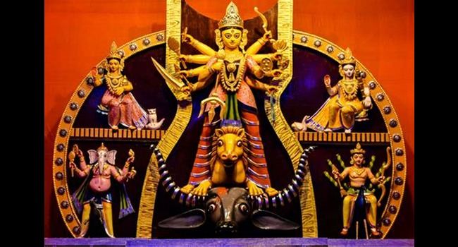

TABLE LIST
MAHALAYA 2023 Time:
A maximum number of people do not know when is Mohalaya. It is very important for the upcoming Durga Puja. If you do not know about this, so no problem. You can get Mohalay’s real-time and date in our website. This year Mahalaya 2023 will start on 14 October 2023 Monday.
SHASTHI PUJA 2023 Time:
This year Shasthi puja will start on 20 October 2023 Friday.
SAPTAMI PUJA 2023 Time:
This year Maha Saptami puja will start on 21 October 2023 Saturday.
OSTHOMI PUJA 2023 Time:
This year Maha Osthomi puja will start on 22 October 2023 Sunday.
NABAMI PUJA 2023 Time:
This year Maha Nabami puja will start on 23 October 2023 Monday.
DASHAMI PUJA 2023 Time:
This year Maha Dashami puja will start on 24 October 2023 Tuesday.
